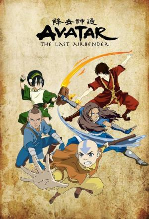

Avatar La Leyenda de Ang |
||
|---|---|---|
|  | Sinopsis: El mundo está dividido en cuatro naciones, correspondientes a los cuatro elementos: La Tribu del Agua, El Reino de la Tierra, la Nación del Fuego y los Nómadas del Aire. En cada nación hay una notable orden llamada de los "Maestros" que aprenden a potenciar su talento nato y manipular su elemento nativo, combinando artes marciales y magia elemental. En cada generación, sólo un Maestro es capaz de controlar los cuatro elementos, y recibe el nombre de Avatar, el espíritu del mundo manifestado en forma humana, capaz de mantener la armonía de las cuatro naciones. Cuando La Nación del Fuego sometió a su dominio al resto de las naciones, parecía que la guerra se impondría. Sin embargo, la reencarnación del Avatar esperaba, congelado en una burbuja de hielo, que alguien le encontrara... Cien años después dos niños, la responsable y valiente Katara y su aguerrido hermano Sokka descubren a Aang. Juntos comienzan un épico viaje para cumplir el destino del Avatar: Dominar los cuatro elementos y devolver el equilibrio y la paz al mundo. |
Director:Michael Dante DiMartino, Bryan Konietzko Reparto:Zach Tyler, Mae Whitman, Jack De Sena Año: 2005 Duracion:24 min cada episodio Pais:Estados Unidos |
Criticas Profesionales:Joshua RiveraAvatar no sólo es una de las mejores series animadas; es un programa excelente, independientemente de su formato |
Trailer |
Obtener:AlquilarComprar |
Registrate/Iniciar Sesion